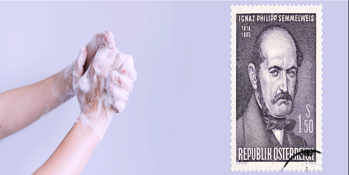

Analysis of Dr. Semmelweis's Handwashing Breakthrough

In my analysis I explored how Dr. Semmelweis's pioneering hand hygiene work revolutionized childbirth. Through research and data analysis, a remarkable link of proper handwashing reduces maternal deaths significantly. By sharing the historical background, methods, and results.